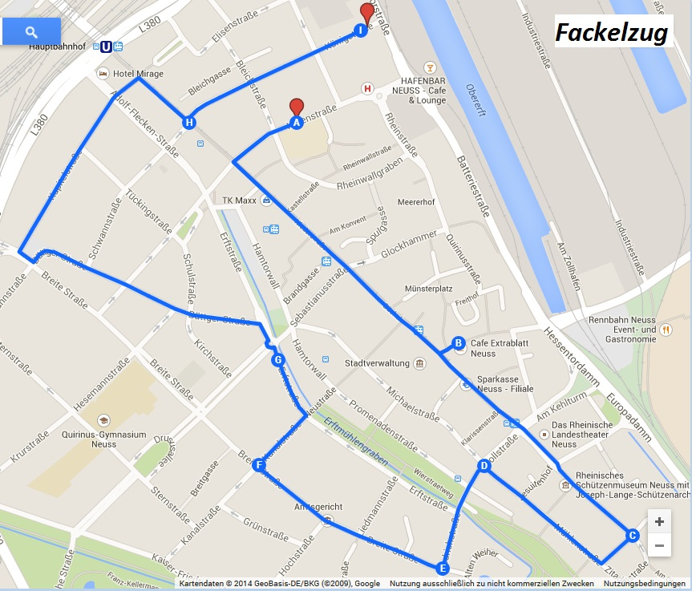

Zugwege

Korpsbefehl
[...]Nun können sie endlich kommen, die Tage der Wonne, auf die wir Grenadiere uns gemeinsam mit unseren Familien, Freunden und Gästen das ganze Jahr lang vorbereitet haben.[...]
NGK Infos
NGK-Info 4-2015
Zu unserem sportlichen Höhepunkt, dem NGK-Fußballturnier fehlen noch einige Meldungen. Es können auch Spielgemeinschaften aus unseren Korps gemeldet werden!
NGK-Info 3-2015
[..] Unser Jahrbuch ist fertig gestellt und wird auf der Chargiertenversammlung ausgegeben. Die Fackelbauer haben auf der Fackelbaubesprechung bereits Ihre Großfackeln gemeldet und die Grenadiersänger haben mit ihren Proben begonnen.
Sonstiges

Handbuch für Grenadiere
"... waren die Socken gleich noch rot oder doch blau?"
Das Handbuch für Grenadiere ist einer kleiner Leitfaden der Regelungen im Grenadierkorps.